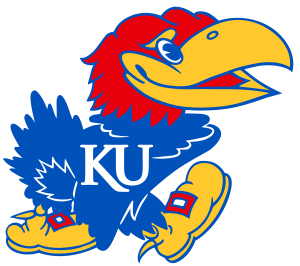

Projected championship matchup (if the season ended today) resolved
Replay the season
Both boards below redraw to the Sunday morning after the week you pick. Every frame is the real rules engine run against the results that existed at the time, so what you see is what the standings actually were — not a reconstruction. A team that could still reach the championship game that week is plain, bold once its berth was clinched and bold italic for the top seed; struck through means eliminated. Rows flash green when a team climbed and red when it fell.
As the conference keeps it
| Team | Conf | Pct | Non-conf | Overall | |
|---|---|---|---|---|---|
| 1 | Utah | 6–0 | 1.000 | 3–0 | 9–0 |
| 2 | Texas Tech | 5–1 | 0.833 | 3–0 | 8–1 |
| T3 | Arizona | 4–2 | 0.667 | 3–0 | 7–2 |
| BYU | 4–2 | 0.667 | 3–0 | 7–2 | |
| Baylor | 4–2 | 0.667 | 2–1 | 6–3 | |
| Oklahoma State | 4–2 | 0.667 | 2–1 | 6–3 | |
| 7 | Houston | 4–3 | 0.571 | 3–0 | 7–3 |
| T8 | Arizona State | 3–3 | 0.500 | 2–1 | 5–4 |
| UCF | 3–3 | 0.500 | 2–1 | 5–4 | |
| T10 | Cincinnati | 2–4 | 0.333 | 3–0 | 5–4 |
| Iowa State | 2–4 | 0.333 | 2–1 | 4–5 | |
| TCU | 2–4 | 0.333 | 2–1 | 4–5 | |
| West Virginia | 2–4 | 0.333 | 3–0 | 5–4 | |
| 14 | Colorado | 2–5 | 0.286 | 2–1 | 4–6 |
| T15 |  Kansas | 1–5 | 0.167 | 2–1 | 3–6 |
| Kansas State | 1–5 | 0.167 | 3–0 | 4–5 |
These standings are kept on conference winning percentage alone, so teams tied on percentage share a position even when they have played a different number of games: 2–0 and 1–0 are both 1.000. The Big 12 runs its tiebreaking procedure once the regular season is over, and for one purpose: naming the two teams that play in the championship game. Every other tie is left standing, which is why its published standings show co-positions instead of an order.
If every tie were broken
| Team | Conf | Pct | Non-conf | Overall | |
|---|---|---|---|---|---|
| 1 | Utah | 6–0 | 1.000 | 3–0 | 9–0 |
| 2 | Texas Tech | 5–1 | 0.833 | 3–0 | 8–1 |
| 3 | BYU | 4–2 | 0.667 | 3–0 | 7–2 |
Four teams are tied at 0.667. The ladder runs until one step puts a single team ahead, and that team takes 3rd.
| |||||
| 4 | Arizona | 4–2 | 0.667 | 3–0 | 7–2 |
With the teams above placed, the ladder starts over for the three still tied at 0.667: Arizona, Baylor, Oklahoma State.
| |||||
| 5 | Baylor | 4–2 | 0.667 | 2–1 | 6–3 |
With the teams above placed, the ladder starts over for the two still tied at 0.667: Baylor, Oklahoma State.
| |||||
| 6 | Oklahoma State | 4–2 | 0.667 | 2–1 | 6–3 |
Oklahoma State is 6th as the last team left in the tie at 0.667. Baylor took 5th at step (b).
| |||||
| 7 | Houston | 4–3 | 0.571 | 3–0 | 7–3 |
| 8 | UCF | 3–3 | 0.500 | 2–1 | 5–4 |
Two teams are tied at 0.500. The ladder runs until one step puts a single team ahead, and that team takes 8th.
| |||||
| 9 | Arizona State | 3–3 | 0.500 | 2–1 | 5–4 |
Arizona State is 9th as the last team left in the tie at 0.500. UCF took 8th at step (b).
| |||||
| 10 | Iowa State | 2–4 | 0.333 | 2–1 | 4–5 |
Four teams are tied at 0.333. The ladder runs until one step puts a single team ahead, and that team takes 10th.
| |||||
| 11 | West Virginia | 2–4 | 0.333 | 3–0 | 5–4 |
With the teams above placed, the ladder starts over for the three still tied at 0.333: West Virginia, Cincinnati, TCU.
| |||||
| 12 | Cincinnati | 2–4 | 0.333 | 3–0 | 5–4 |
With the teams above placed, the ladder starts over for the two still tied at 0.333: Cincinnati, TCU.
| |||||
| 13 | TCU | 2–4 | 0.333 | 2–1 | 4–5 |
TCU is 13th as the last team left in the tie at 0.333. Cincinnati took 12th at step (d).
| |||||
| 14 | Colorado | 2–5 | 0.286 | 2–1 | 4–6 |
| 15 | Kansas State | 1–5 | 0.167 | 3–0 | 4–5 |
Two teams are tied at 0.167. The ladder runs until one step puts a single team ahead, and that team takes 15th.
| |||||
| 16 | Kansas | 1–5 | 0.167 | 2–1 | 3–6 |
Kansas is 16th as the last team left in the tie at 0.167. Kansas State took 15th at step (a).
| |||||
The same procedure carried all the way down, one team per position wherever the rules can name one. The letter under a tied team is the step that placed it, with that team's figure at the step, and pressing it opens the whole pass. The conference never publishes this and it decides nothing: it is what they produce if you ask them to sort the whole league. A shared position is one the ladder has nothing to break, which early in the year is most of them, and it is the order the rest of this site uses so every team has a place to stand. The Rules walks the steps.
How the season moved
Position after each week, from the fully-broken board — the only one that gives every team a place of its own. Hover a line to follow one program. Weeks with no Big 12 games are skipped, so the spacing is by conference week, not by calendar date.